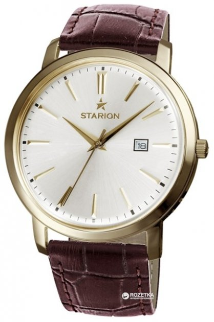
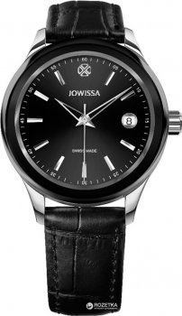
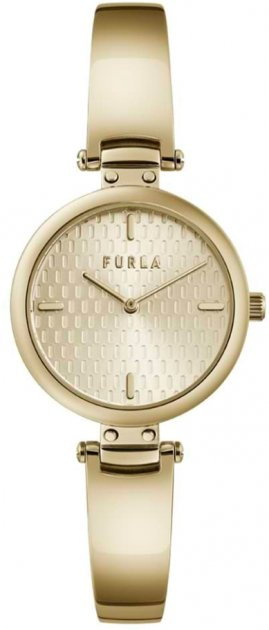
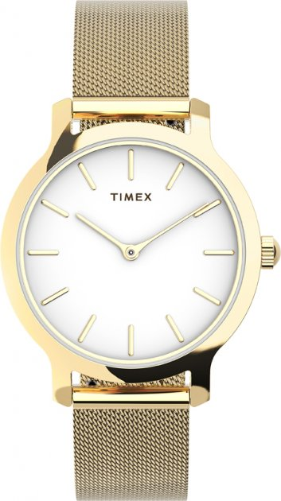
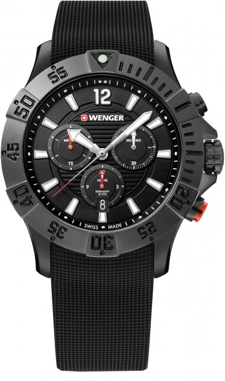

Наручные часы
- Жіночий годинник STARION А570 Ladies G/Silver&Brown
- Чоловічий годинник Jowissa J4.201.M
- Жіночий годинник FURLA WW00018006L2
- Женские часы Timex Transcend Tx2u86800
- Мужские часы Wenger W01.0643.120
1.Жіночий годинник STARION А570 Ladies G/Silver&Brown
Тип-Жіночі
Особливості циферблата-Центральна секундна стрілка
Механізм-Кварцовий
Стиль-Класичний
Тип циферблата-Стрілковий
Ремінець/браслет-Ремінець
Функції-Дата
Колекція-Classic
Скло-Мінеральне
Формат часу-12 год
Вид циферблата-Індекси
Форма корпусу-Кругла
Матеріал корпуса-Нержавіюча сталь
Основний колір циферблата-Білий
Водонепроникність-30 м
Колір ремінця/браслета-Коричневий
Матеріал ремінця/браслета-Натуральна шкіра
Фабрика складання-Великобританія
Підсвітка-Без підсвічування
Розміри корпусу (ВхШ)-38 х 38 мм
Вага-300
Комплектація-Коробка,Гарантійний талон,Паспорт
Характеристики механізму-Miyota JM10
Елементи живлення-SR621W
Країна реєстрації бренду-Англія
Гарантія-12 місяців офіційної гарантії від виробника
Точність ходу- +/- 20 секунд у місяць
Особливості-Із секундною стрілкою
Купить

2.Чоловічий годинник Jowissa J4.201.M
Тип-Чоловічі
Механізм-Кварцовий
Стиль-Класичний
Тип циферблата-Стрілковий
Ремінець/браслет-Ремінець
Функції-Дата
Колекція-Tiro
Скло-Мінеральне
Формат часу-12 год
Вид циферблата-Індекси
Форма корпусу-Кругла
Матеріал корпуса-Нержавіюча сталь
Основний колір циферблата-Чорний
Водонепроникність-50 м
Колір ремінця/браслета-Чорний
Матеріал ремінця/браслета-Шкіряний ремінець
Фабрика складання-Швейцарія
Розміри корпусу (ВхШ)-38 x 38 мм
Комплектація-Годинник,Коробка,Паспорт,Гарантійний талон,Характеристики механізму,Ronda 715
Країна реєстрації бренду-Швейцарія
Гарантія-24 місяці офіційної гарантії від виробника
Точність ходу- +/- 20 секунд у місяць
Купить

3.Жіночий годинник FURLA WW00018006L2
Тип-Жіночі
Механізм-Кварцовий
Стиль-Класичний
Тип циферблата-Стрілковий
Ремінець/браслет-Браслет
Колекція-NEW PIN
Скло-Мінеральне
Формат часу-12 год
Вид циферблата-Індекси
Форма корпусу-Кругла
Матеріал корпуса-Сталь
Основний колір циферблата-Шампань
Водонепроникність-50 м
Колір ремінця/браслета-Золотистий
Матеріал ремінця/браслета-Сталь
Фабрика складання-Китай (Гонконг)
Вага-0.2
Характеристики механізму-Кварцовий механізм
Елементи живлення-Батарейка
Країна реєстрації бренду-Італія
Гарантія-12 місяців офіційної гарантії від виробника
Точність ходу-+/- 20 секунд у місяць
Колір корпусу-Золотистий
Діаметр корпусу-32 мм
Особливості-Із секундною стрілкою
Купить

4.Женские часы Timex Transcend Tx2u86800
Тип-Женские
Механизм-Кварцевый
Стиль-Классический
Тип циферблата-Стрелочный
Тип крепления-Браслет
Функции-Дата
Коллекция-City
Стекло-Минеральное
Вид циферблата-Индексы
Форма корпуса-Круглая
Материал корпуса-Латунь
Основной цвет циферблата-Белый
Водонепроницаемость-50 м
Цвет ремешка/браслета-Золотистый
Материал ремешка/браслета-Нержавеющая сталь
Ширина ремешка/браслета-16
Фабрика сборки-США
Вес-0.255
Страна регистрации бренда-США
Гарантия-12 месяцев официальной гарантии от производителя
Цвет корпуса-Золотистый
Диаметр корпуса-31 мм
Особенности-Водонепроницаемый корпус
Купить

5.Мужские часы Wenger W01.0643.120
Тип-Мужские
Особенности циферблата-Люминесцентные стрелки/метки
Механизм-Кварцевый
Стиль-Спортивный
Тип циферблата-Стрелочный
Тип крепления-Ремешок
Функции-Дата,Секундомер,Хронограф
Коллекция-Sport
Стекло-Сапфировое
Формат времени-12 ч
Вид циферблата-Арабские цифры,Индексы
Форма корпуса-Круглая
Материал корпуса-Нержавеющая сталь
Основной цвет циферблата-Черный
Водонепроницаемость-200 м
Цвет ремешка/браслета-Черный
Материал ремешка/браслета-Каучук
Ширина ремешка/браслета-22 мм
Фабрика сборки-Швейцария
Подсветка-Без подсветки
Вес-0.104
Страна регистрации бренда-Швейцария
Гарантия-36 месяцев официальной гарантии от производителя
Цвет корпуса-Черный
Диаметр корпуса-43 мм
Купить
